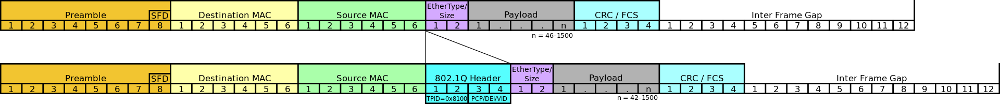

1. Introdução às VLANs
O que é uma VLAN?
Uma VLAN (Virtual Local Area Network) é uma divisão lógica de uma rede local (LAN) em múltiplos domínios de broadcast menores e independentes. Ela permite que administradores de rede dividam e agrupem hosts em uma rede com base em requisitos funcionais e de segurança, sem precisar modificar a infraestrutura física da rede.
Figura 1 - Inserção da tag VLAN 802.1q
Definição de VLAN
As VLANs são implementadas em switches de camada 2, onde portas são configuradas para pertencer a VLANs específicas. Isso cria domínios de broadcast separados, melhorando o desempenho da rede ao reduzir o tráfego desnecessário. Cada VLAN é uma rede lógica independente, mesmo que os hosts estejam fisicamente conectados ao mesmo switch.
Quando um host envia um quadro Ethernet, o switch adiciona uma tag VLAN identificando a qual VLAN aquele tráfego pertence. Switches podem então encaminhar o tráfego apenas para portas que pertencem àquela VLAN específica. Isso isola o tráfego entre VLANs, aumentando a segurança.
Figura 2 - Mapeamento de uma rede VLAN 802.1qHistória e evolução das VLANs
As VLANs surgiram no final dos anos 80 como uma forma de dividir redes grandes em segmentos menores. Antes disso, todas as portas de um switch ficavam no mesmo domínio de broadcast por padrão. As VLANs permitiram uma configuração mais flexível e segmentada das redes.
Hoje em dia, as VLANs são amplamente utilizadas em redes corporativas para isolar tráfego de diferentes departamentos, aplicações e serviços. Elas são uma tecnologia fundamental para a implementação de redes locais virtuais e seguras.
Por que usar VLANs?
As VLANs (Virtual Local Area Networks) oferecem uma série de benefícios e funcionalidades que as tornam essenciais para a gestão eficaz de redes. Aqui estão algumas razões fundamentais para usar VLANs:
1. Solução para Problemas de Broadcast: As VLANs resolvem problemas de broadcast ao criar domínios de broadcast separados, melhorando o desempenho da rede.
2. Aumento da Segurança: Ao controlar o acesso e isolar tráfego sensível, as VLANs reforçam a segurança da rede, limitando ameaças internas e externas.
3. Facilidade de Gerenciamento de Dispositivos: Com as VLANs, é mais fácil gerenciar dispositivos, permitindo que usuários sejam movidos entre switches mantendo sua VLAN original.
Casos de uso comuns
1. Videoconferência: Priorizando o tráfego de vídeo, as VLANs garantem recursos adequados para videoconferências de alta qualidade.
2. Acesso Remoto: VLANs são usadas para fornecer acesso remoto seguro a aplicativos baseados em nuvem, isolando usuários remotos da rede principal.
3. Backup e Recuperação em Nuvem:Ao isolar o tráfego de backup e recuperação, as VLANs melhoram o desempenho e reduzem os congestionamentos na rede.
2. Fundamentos de VLANs
Como as VLANs funcionam?
As VLANs (Virtual Local Area Networks) são uma tecnologia de rede que permite dividir uma rede local em múltiplos domínios de broadcast menores e independentes. Isso é feito ao associar dispositivos a uma VLAN específica, que é identificada por um número único chamado ID de VLAN (VLAN ID). Cada dispositivo conectado a uma VLAN pertence ao mesmo domínio de transmissão, e o tráfego é encaminhado apenas para dispositivos dentro da mesma VLAN.
Segmentação de rede
A segmentação de rede é um benefício fundamental das VLANs. Elas permitem dividir uma rede em segmentos menores, cada um com sua própria sub rede, facilitando a gestão e a segurança da rede. Isso é especialmente útil em redes grandes ou complexas, onde a segmentação ajuda a reduzir a complexidade de administração e a melhorar a performance da rede.
Figura 3 - Exemplo de segmentação de VlanIsolamento de broadcast
O isolamento de broadcast é outra vantagem das VLANs. Em uma rede sem VLANs, todas as transmissões de broadcast são enviadas para todas as portas, o que pode causar congestionamento e diminuir o desempenho. As VLANs restringem as transmissões de broadcast apenas às portas que pertencem à mesma VLAN, melhorando a eficiência e a performance da rede.
Tipos de VLANs
Existem vários tipos de VLANs que podem ser implementadas em uma rede, cada uma com seu propósito específico:
1. VLANs padrão: Essas são as VLANs mais comuns e são configuradas por padrão em muitos dispositivos de rede. Elas são usadas para segmentar redes em bases funcionais ou de segurança.
2. VLANs de voz: Essas VLANs são usadas para priorizar o tráfego de voz sobre IP (VoIP) e garantir uma experiência de chamada de alta qualidade.
3. VLANs de gerenciamento: Essas VLANs são usadas para isolar o tráfego de gerenciamento da rede, garantindo que apenas os dispositivos autorizados tenham acesso a essas informações.
4. VLANs nativas e não-nativas: As VLANs nativas são configuradas por padrão em dispositivos de rede e são usadas para segmentar redes em bases funcionais ou de segurança. As VLANs não-nativas são configuradas manualmente e são usadas para segmentar redes em bases específicas. Identificadores de VLAN (VLAN IDs)
3. Configuração de VLANs
Para configurar VLANs em um switch, é necessário criar e nomear as VLANs desejadas, e então atribuir portas a cada VLAN específica. Isso cria domínios de broadcast separados, com tráfego sendo encaminhado apenas para portas pertencentes àquela VLAN.
Criar e nomear VLANs
VLANs são identificadas por um número único, geralmente entre 1 e 4094. Por padrão, todas as portas pertencem à VLAN 1, que não pode ser renomeada ou excluída. Administradores podem criar VLANs adicionais e atribuir-lhes nomes descritivos para facilitar o gerenciamento.
Atribuir portas a VLANs
Após criar as VLANs, portas individuais do switch precisam ser configuradas para pertencer a cada VLAN específica. Isso determina quais dispositivos finais pertencem a cada domínio de broadcast separado.
Figura 4 - Mostra que podemos configurar VLANs com diferentes portasVLAN Trunking
VLAN trunking é uma tecnologia fundamental para interligar VLANs entre switches e roteadores, permitindo que várias VLANs compartilhem um único link físico. Isso é essencial para redes complexas que não sejam de uma estrutura de rede flexível e escalável.
Um link trunk carrega tráfego para várias VLANs sobre um único enlace físico, utilizando um mecanismo de marcação interno chamado IEEE 802.1Q. Cada quadro Ethernet é marcado com uma tag identificando a VLAN a quais pertencem, permitindo que switches encaminhem o tráfego apenas para portas que pertencem a VLAN específicas.
O padrão IEEE 802.1Q define como o trunking de VLANs deve funcionar, especificando o formato da tag VLAN adicionada aos quadros Ethernet para identificar a VLAN. Isso permite que os switches entendam e encaminhem corretamente o tráfego para as VLANs corretas.
Além disso, o trunking de VLANs também é conhecido como VLAN trunking ou entroncamento de portas. Ele é comumente utilizado em redes de computadores, telefonia e redes de próxima geração, onde a segmentação da rede é essencial para a segurança, a eficiência e a escalabilidade.
Configuração de portas trunk
Portas de switch precisam ser configuradas manualmente como portas trunk para habilitar o trunking de VLANs. Isso permite que múltiplas VLANs compartilhem aquele link físico entre switches. Parâmetros adicionais como a VLAN nativa também precisam ser configurados.
VLANs dinâmicas e protocolos de gerenciamento
Existem protocolos que permitem a configuração dinâmica de VLANs e trunking, simplificando a administração da rede.
GVRP (GARP VLAN Registration Protocol)
O GVRP permite que switches troquem informações sobre VLANs configuradas dinamicamente. Isso permite que switches aprendam sobre VLANs em outros switches e configurem automaticamente portas trunk e membros de VLAN.
VTP (VLAN Trunking Protocol)
O VTP permite que switches troquem informações sobre VLANs configuradas centralmente. Isso permite que alterações em VLANs feitas em um switch sejam propagadas automaticamente para outros switches na mesma VTP domain. O VTP simplifica muito a configuração e gerenciamento de VLANs em redes grandes.
4. Implementação de VLANs
Implementação de VLANs
A implementação de VLANs é um processo que envolve planejamento, design, configuração em switches e testes. Aqui estão os passos para implementar VLANs:
Passos para implementação
Identificar as necessidades de rede e segmentação necessárias para a organização.
1. Levantamento de Necessidades: Identifique as demandas específicas da rede, como largura de banda, segurança e acessibilidade.
2. Análise de Tráfego: Estude o tráfego existente para entender como os dispositivos se comunicam e onde são necessários segmentos.
3. Mapeamento de Dispositivos: Liste todos os dispositivos conectados para determinar quais agrupar em segmentos.
Comandos de configuração
Figura 5 - Comandos para criar a uma vlan
Esses passos e comandos ajudam a implementar VLANs em switches Cisco, garantindo a segurança, a eficiência e a escalabilidade da rede.
5. Segurança em VLANs
Desafios de segurança em VLANs
1. Ataques VLAN Hopping: é um ataque em que um invasor ganha acesso não autorizado a tráfego de VLANs diferentes, explorando vulnerabilidades na configuração de trunking.
2. O VLAN hopping Ataques de Double-Tagging: é um ataque em que um invasor insere múltiplas tags VLAN em um quadro Ethernet para contornar as políticas de segurança e acessar informações sensíveis.
Práticas recomendadas de segurança
1. Configuração de VLAN nativa segura : Evite o uso da VLAN 1 como VLAN nativa, alterando o VLAN ID para um número diferente para evitar vulnerabilidades associadas à VLAN 1.
2. Segmentação de VLANs por função : Segmentar VLANs com base em funções e necessidades de segurança, garantindo que apenas dispositivos autorizados tenham acesso a determinadas VLANs.
Essas práticas ajudam a fortalecer a segurança em VLANs, protegendo redes contra ataques e garantindo a integridade dos dados transmitidos.
6. Casos de Uso e Exemplos Práticos
As VLANs são amplamente utilizadas em diversos ambientes, desde redes corporativas até datacenters e instituições educacionais, para segmentar redes, melhorar a segurança e a eficiência operacional. Aqui estão alguns exemplos práticos de casos de uso de VLANs em diferentes cenários:
VLANs em Redes Corporativas
Segmentação por Departamento
Em empresas, as VLANs são usadas para segmentar a rede por departamento, permitindo que diferentes áreas tenham sua própria rede lógica e políticas de segurança específicas.
Separação de Tráfego de Voz e Dados
VLANs são implementadas para separar o tráfego de voz e dados, garantindo a qualidade das chamadas VoIP e priorizando o tráfego crítico.
VLANs em Redes Educacionais
Separação de Redes de Alunos e Professores:
Em instituições educacionais, VLANs são usadas para separar as redes de alunos e professores, garantindo a segurança dos dados e restringindo o acesso a recursos sensíveis.
VLANs em Datacenters
Isolamento de Servidores e Dispositivos de Armazenamento:
Em datacenters, VLANs são utilizadas para isolar servidores e dispositivos de armazenamento, garantindo a segurança dos dados e otimizando o desempenho da rede.
Esses exemplos demonstram a versatilidade e importância das VLANs em diferentes ambientes, destacando como essa tecnologia é essencial para a segmentação eficaz da rede, aprimorando a segurança e a eficiência operacional em diversos cenários de uso.
7. Troubleshooting e Manutenção de VLANs
Diagnóstico de Problemas Comuns
Alguns problemas comuns que podem ocorrer com VLANs incluem:
1. Problemas de Conectividade
a. Dispositivos em uma VLAN não fornecem comunicação com outros na mesma VLAN
b. Verifique configurações de IP, máscara de sub-rede e gateway padrão.
Problemas de Configuração de Trunking
a. Incompatibilidade na VLAN nativa configurada em cada extremidade do trunk.
b. Incompatibilidade no modo de entroncamento (ligado/desligado/automático) entre switches.
c. Verifique VLANs permitidas no trunk.
Monitoramento de Tráfego de VLAN
Analisadores de protocolo como Wireshark para capturar e analisar pacotes.
Espelhamento de portas no switch para redirecionar tráfego de uma VLAN para uma porta de monitoramento.
Essas ferramentas e técnicas ajudam a identificar e resolver problemas relacionados a VLANs, garantindo o funcionamento correto da segmentação de rede.
8. Avanços e Tendências em VLANs
À medida que as VLANs estão evoluindo em conjunto com as Redes Definidas por Software (SDN), permitindo uma gestão mais flexível e dinâmica das VLANs em ambientes de rede virtualizados.
Em SDN, a configuração e o gerenciamento de VLANs podem ser automatizados e programados de forma centralizada, simplificando a administração da rede.
A automação de VLANs está se tornando uma prática comum, especialmente em ambientes de SDN, onde a configuração e o provisionamento de VLANs podem ser automatizados para garantir uma implementação rápida e consistente.
Ferramentas de automação permitem a configuração dinâmica de VLANs com base em políticas predefinidas, simplificando a gestão e garantindo a conformidade com os requisitos da rede.
Nas redes da próxima geração, as VLANs continuarão desempenhando um papel fundamental na segmentação da rede e na melhoria da segurança e desempenho.
Com o avanço da tecnologia, esperamos que as VLANs evoluam para suportar requisitos cada vez mais complexos de redes modernas, como a tecnologia com tecnologias emergentes como o 5G e a Internet das Coisas (IoT).
Esses avanços e tendências destacam a importância contínua das VLANs na evolução das redes, adaptando-se às demandas de ambientes de rede cada vez mais dinâmicos e complexos. A integração com SDN, a automação e a evolução para redes de próxima geração são aspectos-chave que moldam o futuro das VLANs.